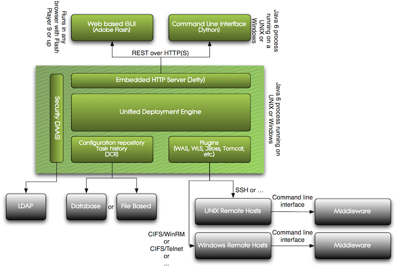
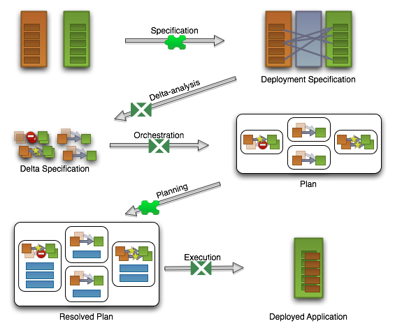

This manual describes how to customize Deployit for use in your environment.
The Deployit deployment automation platform provides out of the box deployment capabilities for several middleware platforms. Some customers, however, will want to deeply integrate Deployit in their environment or deploy to middleware stacks that Deployit does not support out of the box. Tailoring deployment plans, adding support for new middleware and integrating with other systems are all possible by customizing the Deployit system. This manual describes what customizations are possible and how to adapt Deployit to fit in your environment.
This manual will first describe the Deployit system architecture to give a feel for where customizations fit in the system. Then, the role of Deployit extensions (plugins) in the deployment process is described. Next, the different ways of customizing Deployit are described.
Deployit is designed with extensibility in mind and provides several different ways to modify it's behavior. Depending on the extender's skill set and requirements, one or more of these methods can be used to achieve the desired result.
These are the ways in which Deployit can be customized:
Each of these types of customizations are described in the remainder of this document.
Today's middleware products are complicated and support lots of configuration options. Deployit plugins represent this middleware to the Deployit system. If a plugin wants to be a direct representation of the options in the middleware, it will quickly grow very large and unwieldy. Deployit provides a better way.
Given a CI defined in a plugin, an extender can customize this CI by adding new synthetic properties to the Java class, or by using the type system to extend the CI. These additions can either be done using plain Java, or by defining them in an XML file called synthetic.xml which can be added to the Deployit classpath. Changes to the types are loaded when the Deployit server starts and can be used to perform deployments.
Types existing in Deployit can be modified to contain additional synthetic properties. These properties become a part of the CI type and can be specified in the deployment package and shown in the Deployit GUI.
There are several reasons to modifys:
The following information can be specified when modifying a CI:
| Property | Required? | Meaning |
|---|---|---|
| type | Yes | Specifies the CI type to modify |
Additionally, any property that is modified is listed as a nested property element. For each property, the following information can be specified:
| Property | Required? | Meaning |
|---|---|---|
| name | Yes | Specifies the name of the property to modify |
| kind | No | Specifies the type of the property to modify. Possible values are: enum, boolean, integer, string, ci, set_of_ci, set_of_string, map_string_string |
| description | No | Describes the property |
| category | No | Categorizes the property. Each category is shown in a separate tab in the Deployit GUI |
| label | No | Sets the CI's label property ??? |
| required | No | Indicates whether the property is required or not |
| password | No | Indicates whether the property stores a password. If so, the property value is masked in the Deployit GUI and CLI |
| size | No | Only relevant for properties with kind `string`. Specifies the property size. Possible values are: default, small, medium, large. Large text fields will be shown as a textarea in the Deployit GUI |
| default | No | Specifies the default value of the property |
| enum-class | No | Only relevant for properties with kind `enum`. Specifies the class of the enumeration that contains the possible values for this property |
| referenced-type | No | Only relevant for properties with kind `ci`, `set_of_ci`. Specifies the type of the referenced CI(s) |
| as-containment | No | Only relevant for properties with kind `ci`, `set_of_ci`. Indicates whether the property is modeled as containment in the repository. If true, the referenced CI or CIs are stored under the CI |
| hidden | No | Indicates whether the property is hidden. Hidden properties don't show up in the Deployit GUI. Note that a hidden property must have a default value |
| transient | No | Indicates whether the property is persisted in the repository or not |
Here are some examples of modifying a CI.
The following XML snippet hides the connectionTimeoutMillis property and gives it a default value:
<type-modification type="base.Host">
<property name="connectionTimeoutMillis" kind="integer" default="1200000" hidden="true" />
</type-modification>
For example, you could add a notes field to a CI to record notes:
<type-modification type="overthere.Host">
<property name="notes" kind="string"/>
</type-modification>
It is also possible to define new CIs using this mechanism. By specifying a new type, it's base (either a concrete Java class or another synthetic type) and namespace, a new type will become available in Deployit. This means the CI type can be a part of deployment packages and created in the Repository browser. Each of the three categories of CIs (deployables, deployeds and containers) can be defined this way.
The following information can be specified when defining a new type:
| Property | Required? | Meaning |
|---|---|---|
| type | Yes | Specifies the CI type name |
| extends | Yes | Specifies the parent CI type that the CI type inherits from |
| description | No | Describes the new CI |
| virtual | No | Specifies whether the CI is virtual (used to group together common properties) or not. Virtual CIs can not be used in a deployment package |
| deployable-type | No | Only relevant for deployed CIs. Specifies the deployable CI type that the CI deploys |
| container-type | No | Only relevant for deployed CIs. Specifies the container CI type that the CI is deployed to |
| generate-deployable | No | Only relevant for deployed CIs. Specifies the deployable CI type to be generated. This property is specified as a nested element |
For each defined CI, zero or more properties can be specified. See the section above for more information.
Here is an example for each of the CI categories.
Usually, deployable CIs are generated by Deployit (see the generate-deployable element above). The following snippet shows an example of defining a deployable manually:
<type type="acme.CustomWar" extends="jee.War">
<property name="startApplication" kind="boolean" required="true"/>
</type>
This XML snippet shows how to define a new container CI:
<type type="tc.Server" extends="generic.Container">
<property name="home" default="/tmp/tomcat"/>
</type>
This XML snippet shows how to define a new deployed CI:
<type type="tc.WarModule" extends="udm.BaseDeployedArtifact" deployable-type="jee.War"
container-type="tc.Server">
<generate-deployable type="tc.War" extends="jee.War"/>
<property name="changeTicketNumber" required="true"/>
<property name="startWeight" default="1" hidden="true"/>
</type>
The tc.WarModule CI is generated when a tc.War is deployed to a tc.Server. The new CI inherits all properties from the udm.BaseDeployedArtifact CI and adds the required property changeTicketNumber. The startWeight property is hidden from the user with a default value of 1.
Using the Deployit type system, the out of the box plugins can be customized. New CI properties or scripts can be added to supplement the functionality delivered by the plugin. More information about this can be found in the respective plugin manuals.
Functionality in the Deployit server core can be customized by using plugpoints. Plugpoints are specified and implemented in Java. On startup, Deployit scans it's classpath for implementations of its plugpoints and prepares them for use. There is no additional configuration required.
Deployit supports the following plugpoints:
A protocol in Deployit is a method for making a connection to a host. Overthere, Deployit's remote execution framework, uses protocols to build a connection with a target machine. Protocol implementations are read by Overthere when Deployit starts.
Classes implementing a protocol must adhere to two requirements:
The OverthereConnectionBuilder interface specifies only one method, connect. This method creates and returns a subclass of OverthereConnection representing a connection to the remote host. The connection must provide access to files (OverthereFile instances) that Deployit uses to execute deployments.
For more information about these classes and interfaces, see the Overthere Javadoc.
An importer is a class that turns an source into a collection of Deployit entities. Both the import source as well as the importer can be customized. Deployit comes with a default importer that understands the DAR package format (see the Packaging Manual for details).
Import sources are classes implementing the ImportSource interface and can be used to obtain a handle to the deployment package file to import. Import sources can also implement the ListableImportSource interface, which indicates they can produce a list of possible files that can be imported. The user can make a selection out of these options to start the import process.
When the import source has been selected, all configured importers in Deployit are invoked in turn to see if any importer is capable of handling the selected import source (the canHandle method). The first importer that indicates it can handle the package is used to perform the import. Deployit's default importer is a fallback.
First, the preparePackage method is invoked. This instructs the importer to produce a PackageInfo instance describing the package metadata. This data is used by Deployit to determine whether the user requesting the import has sufficient rights to perform it. If so, the importer's importEntities method is invoked, allowing the importer to read the import source, create deployables from the package and return a complete ImportedPackage instance. Deployit will handle storing of the package and contents.
Writing a custom plugin is the most powerful way to extend Deployit. It uses Deployit's Java plugin API which is also used by all of the plugins delivered out of the box. The plugin API specifies a contract between Deployit core and a plugin that ensures that a plugin can safely contribute, along with other plugins, to the calculated deployment plan. To understand the plugin API, it is helpful to learn about the Deployit system architecture and how the plugins are involved in performing a deployment. The following sections provide this background information and are followed an explanation of how to build your own plugin.
Deployit features a modular architecture that allows components to be changed and extended while maintaining a consistent system. The following diagram provides a high-level overview of the system architecture:

Deployit's central component is referred to as the core and contains the following functionality:
The Deployit core is accessed using a REST service. The product ships with two clients of the REST API, a graphical user interface (GUI) built in Flex that run in browsers, and a command-line interface (CLI) that run Jython.
Support for various middleware platforms is provided in the form of plugins. Plugins add capabilities to Deployit and may be delivered by XebiaLabs or custom-built by users of Deployit.
A Deployit plugin is a component that provides the Deployit server with a way to interact with a specific piece of middleware. It allows the generic Deployit core to remain independent of the middleware it connects with. At the same time, it allows plugin writers to extend Deployit in a way that seamlessly integrates with the rest of Deployit's functionality. Plugins can be further extended by customers to customize Deployit for their environment.
To be able to integrate with the Deployit core, the plugins adhere to a well-defined interface. This interface describes the responsibilities of the plugin and the core and makes it clear what each can expect of the other. The Deployit core is the active party in this collaboration and it invokes the plugin whenever needed. The plugin, for it's part, replies to requests it is sent. When the Deployit server starts, it scans its classpath for plugins and loads each plugin it finds, readying it for interaction with the Deployit core. The Deployit server does not process changes to loaded plugins or load any new plugins after it has started.
At runtime, multiple plugins will be active at the same time. It is up to the Deployit core to integrate the various plugins and ensure they work together to perform deployments. A well-defined process (described below) is used to invoke all plugins involved in a deployment and turn their contributions into one consistent deployment plan. The execution of the deployment plan is handled by the Deployit core.
Plugins can define the following items:
These concepts are captured in Java interfaces that can be used to write plugins. See the section on "Writing a plugin in Java" below.
Performing a deployment in Deployit consists of a number of stages that, together, ensure that the deployment package is deployed and configured on the environment. Some of these activities are performed by the Deployit core, while others are performed by the plugins. This is the list of stages:
The following diagram depicts the way in which a plugin is involved in a deployment:

On each of the arrows, you see a term from the previous section. Those transitions that are covered by a puzzle-piece are the ones that interact with the plugins, whereas the deployit-logo indicates that the transition is handled by the Deployit core.
The following sections describe how plugins are involved in the above mentioned activities. To clarify the description below, we will use a sample deployment of a deployment package for application PetClinic version 1.0, containing an EAR file, a datasource and static content, to an environment containing an Apache webserver and WebSphere application server.
Because the plugin is involved in the Specification and Planning stages, these will be detailed below.
In the Specification stage, the deployment to be executed is specified. This includes selecting the deployment package and members to be deployed, as well as mapping each package member to the environment members that they should be deployed to.
The plugin defines which CIs the Deployit core can use to create deployments. When a plugin is loaded into the Deployit core, Deployit scans the plugin for CIs and adds these to it's CI registry. Based on the CI information in the plugin, Deployit will categorize each CI as either a deployable CI (defining the what of the deployment) or a container CI (defining the where of the deployment).
Where the deployable CI represents the passive resource or artifact, the deployed CI represents the active version of the deployable CI when it has been deployed in a container. By defining deployed CIs, the plugin indicates which combinations of deployable and container are supported.
Each deployed CI represents a combination of a deployable CI and a container CI. It is important to note that one deployable CI can be deployed to multiple container CIs. For instance, an EAR file can be deployed to two application servers. In a deployment, this is modeled as multiple deployed CIs.
Sometimes it is desirable to configure a deployable CI differently depending on the container CI or environment it is deployed to. This can be done by configuring the properties of the deployed CI differently.
Configuring the deployed CIs is handled in the Deployit core. Users perform this task either via the GUI or via the CLI. The plugin can influence this process by providing default values for it's properties.
The result of the Specification stage is a deployment specification, containing deployed CIs which describe which deployable CIs are mapped to which container CIs with the needed configuration.
In the Planning stage, the deployment specification and its resulting sub-plans that were created in the Orchestration stage are processed.
During this stage, the Deployit core performs the following procedure:
During each part of this procedure, the plugin is invoked so it can contribute (add) required deployment steps to the sub-plan.
Preprocessing allows the plugin to contribute steps to the very beginning of the plan. During preprocessing, all preprocessors defined in the plugin are invoked in turn. Each preprocessor has full access to the delta specification. As such, the preprocessor can contribute steps based on the entire deployment. Examples of such steps are sending an email before starting the deployment or performing a pre-flight check on some CIs that are part of the deployment.
In typical OO fashion, deployed CIs contain both the data and the behavior to make a deployment happen. Each of the deployed CIs that are part of the deployment can contribute steps to ensure that they are deployed or configured correctly.
Steps in a deployment plan must be specified in the correct order for the deployment to succeed. Furthermore, the order of these steps must be coordinated among an unknown number of plugins. To achieve this, Deployit weaves all the separate resulting steps from all the plugins by looking at their specified ordering.
For example, suppose we have a container CI representing a WAS application server called WasServer. This CI contains the data describing a WAS server (things like host, application directory, etc.) as well as the behavior to manage it. During a deployment to this WasServer, the WasServer CI contributes steps with order 10 to stop the WasServer. Also, it would contribute steps with order 90 to restart it. In the same deployment, a deployable CI called WasEar (representing the WAS EAR file) contributes steps to install itself with order 40. The resulting plan would weave the install of the EAR file (40) in between the stop (10) and start (90) steps.
This mechanism allows steps (behavior) to be packaged together with the CIs that contribute them. Also, CIs defined by separate plugins can work together to produce a well-ordered plan.
Even though a step can be registered with a specific order, Deployit uses the following default orders:
Postprocessing is similar to preprocessing, but allows a plugin to add one or more steps to the very end of a plan. A postprocessor could for instance add a step to send a mail once the deployment has been completed.
The Planning stage results in a deployment plan that contains all steps necessary to perform the deployment. The deployment plan is ready to be executed.
This concludes the involvement of the plugin in the deployment planning process.
When writing a plugin in Java, the following interfaces are used to represent the concepts outlined above:
In addition to these types, plugins also specify the behavior required to perform the deployment. That is, which actions (steps) are needed to ensure that a deployable ends up in the container as a deployed. In good OO-fashion, this behavior is part of the Deployed class.
Let's look at the mechanisms available to plugin writers in each of the two deployment phases, Specification and Planning.
All of the CIs in Deployit are part of a namespace to distinguish them from other, similarly named CIs. For instance, CIs that are part of the UDM plugin all use the udm namespace (such as udm.Deployable).
Plugins implemented in Java must specify their namespace in a source file called package-info.java. This file provides package-level annotations and is required to be in the same package as your CIs.
This is an example package-info file:
@Prefix("yak")
package com.xebialabs.deployit.plugin.test.yak.ci;
import com.xebialabs.deployit.plugin.api.annotation.Prefix;
This section describes Java classes used in defining CIs that are used in the Specification stage.
The udm.BaseConfigurationItem is the base class for all the standard CIs in Deployit. It provides the syntheticProperties map and a default implementation for the name of a CI.
The udm.BaseDeployable is the default base class for types that are deployable to udm.Container CIs. It does not add any additional behavior
The udm.BaseContainer is the default base class for types that can contain udm.Deployable CIs. It does not add any additional behavior
The udm.BaseDeployed is the default base class for types that specify which udm.Deployable CI can be deployed onto which udm.Container CI.
Next to these base types, the UDM defines a number of implementations with higher level concepts that facilitate deployments.
When creating a deployment, the deployables in the package are targeted to one or more containers. The deployable on the container is represented as a deployed. Deployeds are defined by the deployable CI type and container CI type they support. Registering a deployed CI in Deployit informs the system that the combination of the deployable and container is possible and how it is to be configured. Once such a CI exists, Deployit users can create them in the GUI by dragging the deployable to the container.
During planning a plugin can contribute steps to the deployment plan. Each of the mechanisms that can be used is described below
The @PrePlanProcessor and @PostPlanProcessor annotations can be specified on a method to define a pre- or postprocessor. The pre- or postprocessor takes an optional order attribute which defaults to '100'; lower order means it is earlier, higher order means it is later in the processor chain. The method should take a DeltaSpecification and return either a Step or List of Step, the name can be anything, so you can define multiple pre- and postprocessors in one class. See these examples:
@PrePlanProcessor
public Step preProcess(DeltaSpecification specification) { ... }
@PrePlanProcessor
public List<Step> foo(DeltaSpecification specification) { ... }
@PostPlanProcessor
public Step postProcess(DeltaSpecification specification) { ... }
@PostPlanProcessor
public List<Step> bar(DeltaSpecification specification) { ... }
As a pre- or postprocessor is instantiated when it is needed, it should have a default constructor. Any fields on the class are not set, so the annotated method should not rely on them being set.
Deployeds can contribute steps to a deployment in which it is present. The methods that are invoked should also be specified in the udm.Deployed CI. It should take a DeploymentPlanningContext, to which one or more Steps can be added with specific ordering. The return type of the method should be void.
The method is annotated with the operation that is currently being performed on the Deployed CI. See the following example, the method createEar is called for both a create and a modify of the DeployedWasEar.
public class DeployedWasEar extends BaseDeployed<Ear, WasServer> {
...
@Create @Modify
public void createEar(DeploymentPlanningContext context) {
// do something with my field and add my steps to the result
// for a particular order
context.addStep(40, new CreateEarStep(this));
}
}
A @Contributor contributes steps for the set of _Delta_s in the current sub-plan being evaluated. The methods annotated with @Contributor can be present on any Java class which has a default constructor. The generated steps should be added to the collector argument context.
@Contributor
public void contribute(Deltas deltas, DeploymentPlanningContext context) { ... }
Plugins are distributed as standard Java ARchives (JARs). These JARs can be added to the Deployit server plugins directory which is added to the Deployit server classpath when it boots. Deployit will scan it's classpath for plugin CIs and load these into it's registry. The CIs are used and invoked during a deployment when appropriate.
Synthetic extension files packaged in the JAR file will be found and read. If there are multiple extension files present, they will be combined and the changes from all files will be combined.
This is the schema of the synthetic.xml file used to contribute types and type changes to Deployit.
<?xml version="1.0"?>
<xs:schema xmlns:xs="http://www.w3.org/2001/XMLSchema"
xmlns="http://www.xebialabs.com/deployit/synthetic"
targetNamespace="http://www.xebialabs.com/deployit/synthetic"
elementFormDefault="qualified">
<xs:element name="synthetic">
<xs:complexType>
<xs:choice maxOccurs="unbounded">
<xs:element name="type" type="SyntheticTypeDefinition"/>
<xs:element name="type-modification" type="SyntheticTypeModification"/>
</xs:choice>
</xs:complexType>
</xs:element>
<xs:complexType name="SyntheticTypeDefinition">
<xs:sequence>
<xs:element name="generate-deployable" type="SyntheticDeployableGeneration" minOccurs="0" maxOccurs="1"/>
<xs:element name="property" type="SyntheticPropertyDefinition" minOccurs="0" maxOccurs="unbounded"/>
</xs:sequence>
<xs:attribute name="type" type="DeployitTypeName" use="required"/>
<xs:attribute name="extends" type="DeployitTypeName" use="required"/>
<xs:attribute name="description" type="xs:string"/>
<xs:attribute name="virtual" type="xs:boolean"/>
<xs:attribute name="deployable-type" type="DeployitTypeName"/>
<xs:attribute name="container-type" type="DeployitTypeName"/>
</xs:complexType>
<xs:complexType name="SyntheticDeployableGeneration">
<xs:attribute name="type" type="DeployitTypeName" use="required"/>
<xs:attribute name="extends" type="DeployitTypeName" use="required"/>
<xs:attribute name="description" type="xs:string"/>
</xs:complexType>
<xs:complexType name="SyntheticTypeModification">
<xs:sequence minOccurs="0" maxOccurs="unbounded">
<xs:element name="property" type="SyntheticPropertyDefinition" minOccurs="1" maxOccurs="unbounded"/>
</xs:sequence>
<xs:attribute name="type" type="DeployitTypeName" use="required"/>
</xs:complexType>
<xs:complexType name="SyntheticPropertyDefinition">
<xs:attribute name="name" type="JavaPropertyName" use="required"/>
<xs:attribute name="kind" type="KindType"/>
<xs:attribute name="description" type="xs:string"/>
<xs:attribute name="category" type="xs:string"/>
<xs:attribute name="label" type="xs:string"/>
<xs:attribute name="required" type="xs:boolean"/>
<xs:attribute name="password" type="xs:boolean"/>
<xs:attribute name="size" type="SizeType"/>
<xs:attribute name="default" type="xs:string"/>
<xs:attribute name="enum-class" type="xs:string"/>
<xs:attribute name="referenced-type" type="DeployitTypeName"/>
<xs:attribute name="as-containment" type="xs:boolean"/>
<xs:attribute name="hidden" type="xs:boolean"/>
<xs:attribute name="transient" type="xs:boolean"/>
</xs:complexType>
<xs:simpleType name="JavaPropertyName">
<xs:restriction base="xs:string">
<xs:pattern value="[a-zA-Z0-9_]*"/>
</xs:restriction>
</xs:simpleType>
<xs:simpleType name="DeployitTypeName">
<xs:restriction base="xs:string">
<xs:pattern value="[a-zA-Z0-9-]*\.[a-zA-Z0-9-]*"/>
</xs:restriction>
</xs:simpleType>
<xs:simpleType name="KindType">
<xs:restriction base="xs:string">
<xs:enumeration value="enum"/>
<xs:enumeration value="boolean"/>
<xs:enumeration value="integer"/>
<xs:enumeration value="string"/>
<xs:enumeration value="ci"/>
<xs:enumeration value="set_of_ci"/>
<xs:enumeration value="set_of_string"/>
<xs:enumeration value="map_string_string" />
</xs:restriction>
</xs:simpleType>
<xs:simpleType name="SizeType">
<xs:restriction base="xs:string">
<xs:enumeration value="default"/>
<xs:enumeration value="small"/>
<xs:enumeration value="medium"/>
<xs:enumeration value="large"/>
</xs:restriction>
</xs:simpleType>
</xs:schema>
The following are some sample classes from a test plugin we use, the Yak plugin.
When discussing the plugin, let's use a sample deployment:
The YakFile is a deployable CI representing a file artifact. It extends the built-in FileArtifact class.
package com.xebialabs.deployit.plugin.test.yak.ci;
import com.xebialabs.deployit.plugin.api.udm.FileArtifact;
public class YakFile extends FileArtifact {
}
In our sample deployment, both yakfile1 and yakfile2 are instances of this Java class.
The YakServer is a container that, when included in an environment, can be the target of a deployment.
package com.xebialabs.deployit.plugin.test.yak.ci;
// imports omitted...
@Metadata(root = Metadata.ConfigurationItemRoot.INFRASTRUCTURE)
public class YakServer extends BaseContainer {
@Contributor
public void stopYak(Deltas deltas, DeploymentPlanningResult result) {
logger.debug("Stopping Yak server");
result.addStep(20, new StopYakServerStep(this));
}
@Contributor
public void startYaks(Deltas deltas, DeploymentPlanningResult result) {
logger.debug("Starting all Yak servers");
Set<YakServer> yakServers = gatherYakServers(deltas.getDeltas());
for (YakServer yakServer : yakServers) {
result.addStep(90, new StartYakServerStep(yakServer));
}
}
private Set<YakServer> gatherYakServers(List<Delta> operations) {
Set<YakServer> servers = new TreeSet<YakServer>();
for (Delta operation : operations) {
if (operation.getDeployed() instanceof RestartRequiringDeployedYakFile &&
operation.getDeployed().getContainer() instanceof YakServer) {
servers.add((YakServer) operation.getDeployed().getContainer());
}
}
return servers;
}
private static final Logger logger = LoggerFactory.getLogger(YakServer.class);
}
This class shows several interesting features:
In our sample deployment, the "yakserver" CI is part of the deployment, so the stopYak method is invoked when planning the deployment. When the startYaks method is invoked, the deltas parameter contains operations for both yakfile CIs. If either of the yakfile CIs was an instance of RestartRequiringDeployedYakFile, a start step would be added to the deployment plan.
The DeployedYakFile represents a YakFile deployed to a YakServer, as reflected in the class definition. The class extends the built-in BaseDeployed class.
package com.xebialabs.deployit.plugin.test.yak.ci;
// imports omitted...
public class DeployedYakFile extends BaseDeployed<YakFile, YakServer> {
@Modify @Destroy
public void stop(DeploymentPlanningResult result) {
result.addStep(10, new StopDeployedYakFileStep(this));
}
@Create @Modify
public void start(DeploymentPlanningResult result) {
logger.info("Adding start artifact");
result.addStep(90, new StartDeployedYakFileStep(this));
}
@Create
public void deploy(DeploymentPlanningResult result) {
logger.info("Adding step");
result.addStep(70, new DeployYakFileToServerStep(this));
}
@Modify
public void upgrade(DeploymentPlanningResult result) {
logger.info("Adding upgrade step");
result.addStep(70, new UpgradeYakFileOnServerStep(this));
}
@Destroy
public void destroy(DeploymentPlanningResult result) {
logger.info("Adding undeploy step");
result.addStep(30, new DeleteYakFileFromServerStep(this));
}
private static final Logger logger = LoggerFactory.getLogger(DeployedYakFile.class);
}
This class shows how to use the @DeployedContributor to contribute steps to a deployment that includes this particular, configured instance of the DeployedYakFile. Each method annotated with the @DeployedContributor annotation is invoked when the specified operation is present in the deployment for the YakFile.
In our sample deployment, yakfile1 already exists on the target container CI so a MODIFY delta will be present in the delta specification for this CI, causing the stop, start and upgrade methods to be invoked on the CI instance. Because yakfile2 is new, a CREATE delta will be present, causing the start, and deploy method to be invoked on the CI instance.
Steps are the actions that will be executed when the deployment plan is started. Below is a sample step above.
package com.xebialabs.deployit.plugin.test.yak.step;
// imports omitted...
public class StartYakServerStep implements Step {
private YakServer server;
public StartYakServerStep(YakServer server) {
this.server = server;
}
@Override
public String getDescription() {
return "Starting " + server;
}
@Override
public Result execute(StepExecutionContext ctx) throws Exception {
return Step.Result.Success;
}
public YakServer getServer() {
return server;
}
}